Different devices have different screen resolution, example mobile phone, tablet, PC and other. If website no update, cannot show normal layout on small screen resolution mobile phone or tablet, but viewport can solve. Viewport will make website normal show on different screen resolution.
Different telecom operator, their internet speed different. Internet speed will affect download times.Fast speed internet can quick download complete about small capacity file, about big file can quick download complete and make sure file completely. Slow speed internet for download times for small capacity file will be delay, for big capacity file may directly disconnect, even already downloaded file cause part of file loss.
Nowadays, have more browsers, function are largely identical but with minor differences. The main features are make a request to server, show data to the user. Common capabilities have search bar, menu bar, back button, forward button, refresh button, bookmarks and other.
HTML stands for HyperText Markup Language. Developer use HTML element to make browser display document according to HTML tag. Inside HTML5 have HTML, CSS and Javascript, make developer work efficiently, faster and complete project early.
If HTML update new tags, browser cannot update in time, so need wait the patch file or update the browser. HTML cannot auto update information from server, when data of HTML have changes, bring about must manuals operation update. HTML5 need waste more time to prepare mobile app, and will make mobile app's code complication.
Nowadays, is the era of science and technology. The most of people will have a mobile phone or a laptop, even has electronic equipment in living, for example television, projector and other. All device or electronic equipment have screen for display, inside of screen is use pixel to display pictures, video, text and other image. Pixel is point or square compose, 1 and 0 to display image when amplification pixel. Pixel have three color, red, green, blue (RGB) to make up beautiful image. Pixel have resolution, resolution of pixel the higher the better, make user can suitable for view image and make image closer to the real.
Graphics file formats have many type, for example .jpg, .png, .gif. Advantages of graphics file formats of jpg format is common use on World Wide Web to save and transfer pictures. Color of pictures of jpg format is bright. Another format is png, compression of png is lossless data compression, format of png have 8-bit, 24-bit and 32-bit, 8-bit (256 index color) support index transparent and alpha transparent, 32-bit have 256 level transparency. Png format support save name of author, name of picture, copyright, the creation time and other information. Png format suitable for use in icon, because background of png support transparent. In term of anti-aliasing, png will better than jpg format and gif format. The last format is gif format, gif format common use on website animation, like children stories, will let child enjoy reading. Gif format support single transparent color and 256 color type (the general called 8-bit color).
Disadvantages of graphics file formats of jpg format is its compression way, compression is use lossy compression, after more times upload and download, quality of picture will distortion.
In the era of the common internet in the most family, on internet have more websites, like blog, YouTube and other social websites for people sharing their creative. YouTube have more interesting video, someone will like favourite, so have some software is involving copyright to download video. Some teenagers like to change other people websites, this also violate intellectual property right. Some artist will use websites to increase popularity, someone will without permission is forwarded to other social websites, also a issues involving copyright.
Due of the screen resolution of the mobile phone or tablet different with computer, when user browse website, design and content of website will become very narrow and crowded, but can use 'viewport' to solve. 'Viewport' could say it's designed for the mobile browser. Add 'viewport' in website, website can show comfortable on different screen resolution of device, when user browse website.
HTML stands for Hypertext Markup Language. Html is skeleton of a website, display and save documents by entering HTML element. CSS stands for Cascading Style Sheets. This is used to beautify and layout HTML, websites have CSS to beautify that allow users to exoerience more beautiful and comfortable webpages. Javascript is a programming language. Sometimes, will see some message pop-up from webiste that is using by entering javascript. Javascript can combined HTML and CSS to create game, develop mobile app and other.
CSS Colors have three type of representation, one of the representation is hex code, hex code is using hexadecimal to representation. In hexadecimal, 1-9 use number to show, after 9 use A-F to show 10-15. In CSS Colors, need add "#" put in front of hex code, example #000000 is black color. The hex code can be converted to hex code using RGB values.
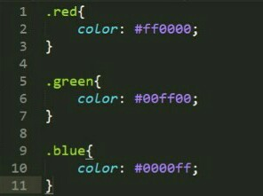First, Blog like a personal diaries, user can put their artistic work on blog, to share with other people and express emotions.
Second, eCommerce websites belong websites of business, make users can shopping online, sellers and buyers not need to meet. Business can advertising on websites and increase reputation.
Target audience is a statistical result on users of website or product. Target audience is very important for the organization, can optimize product or websites and make easy and fun for users using. About some websites, target audience is important, for example comic, anime, novel and other, not every age people suitable or love.
House style like a format, for official document, product manual, project and others, will rules font color, font size, position of title and others. This is easy for handle more task on business, website or others.
Page layout styles have Advanced Grid, Five Box, Fixed Sidebar, this is normal will view on internet in our life. Different page layout styles will affect customer first impression of websites.
First,Advanced Grid is aligned layout, common use on sale boutique, because layout have more square and easy view at a glance. Second, Five Box easy show for customer, normal use in the restaurant industy, volunteer volunteer website and others, can make users have appetite or attention on some serious news. Last, have more sosial interner sites, will use fixed sidebar layout, because users can choose different page in fixed, and view status in a page.
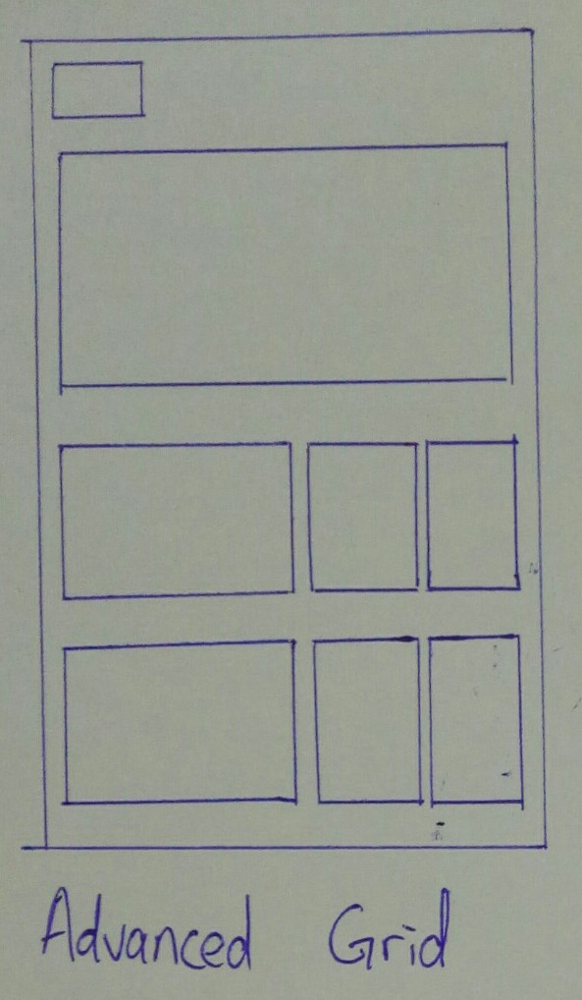 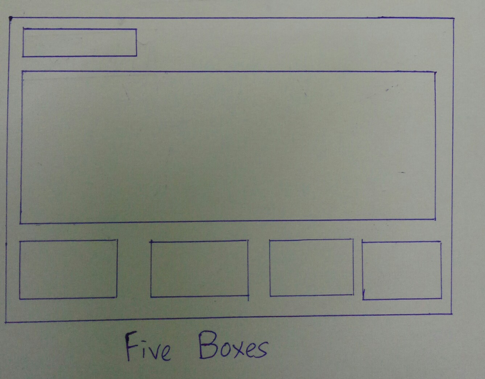 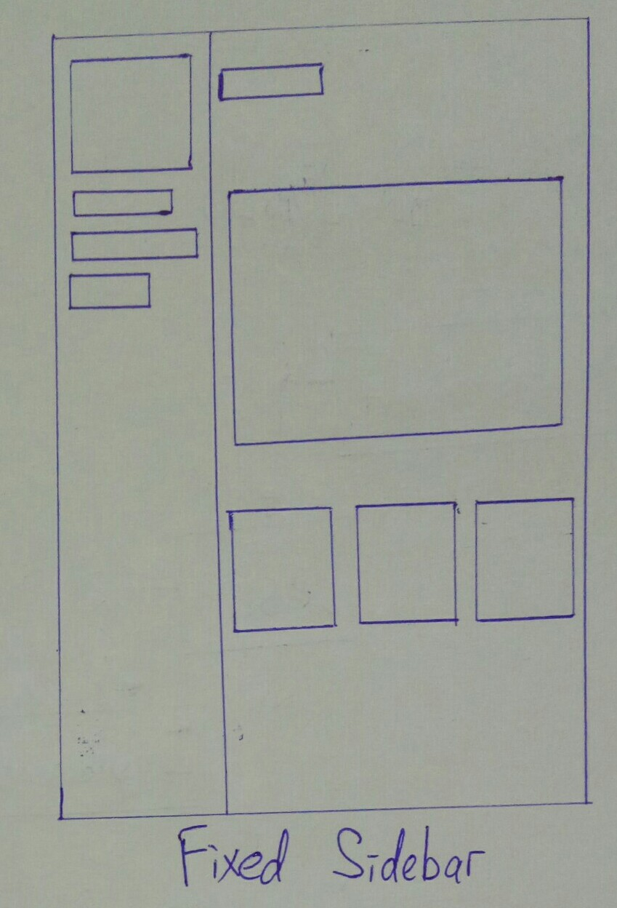Development methodologies is a important part in software development. Development methodologies have Waterfall and Biuld and Fix Model.
Waterfall is a previously developed methods, advantages is have plan to promote project progress, in waterfall can know coding, design, testing in which stage. Disadvantages is all software development stage is fixed, cannot skip stage and need after complete software development to know result. Build and Fix Model is development a first generation project and after customer audit, after review and then modify the project to satify customer requirements. Advantages is poject progress no any rules, and as much as possible to satify customer requirements. Disadvantages of Build and Fix Model is no rules to plan project will affect software will make code messy cause difficulty in maintenance and increase risk.
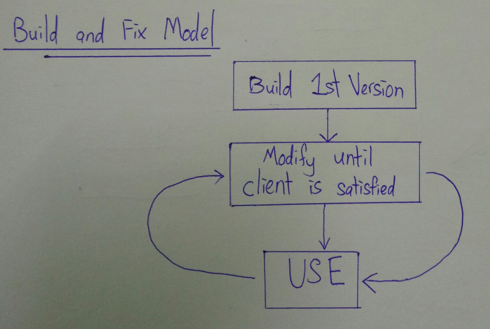 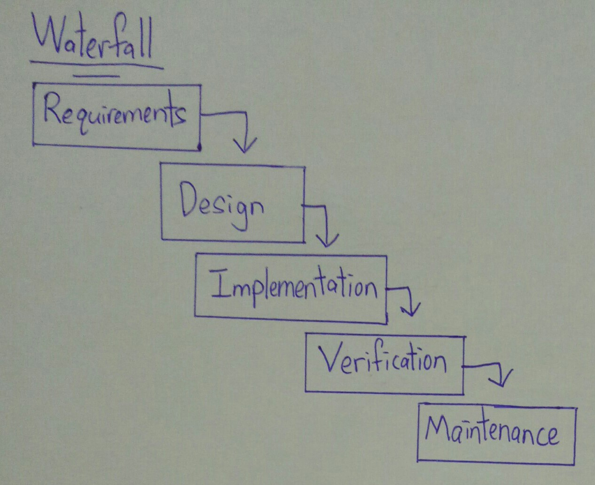Used to establish well communication during requirement gathering phase is Git. Git is a version control system, it can make software developer easy to merge code with another software developer. Github is a platform about Git, software developers can interchange on Github and optimize code.
Codes readability can present ability of software developer. When needs to maintain websites or software, but codes difficult to understand, this will delay work progress and waste man power, money and time.
In my opinion, the best modern coding guides for web pages development is W3schools. In W3schools have more language can learn and it is a reliable website. The explanation inside the W3schools very detailed and can try the codes in W3schools. W3schools have a fixed sidebar and search function to convenient find codes.
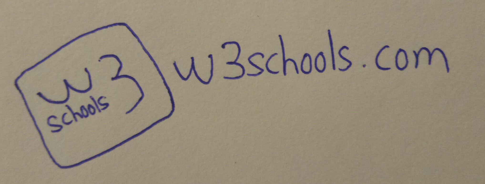My favourites coding guide is W3schools, because in W3schools have more coding guide, easy learn, have detail explanation, can write code in W3schools tool. W3schools have more language can learn in a website, can no need waste more time to search reliable website.
Inspect is a good debug and most convenient debug tools, because Inspect have in browser. We can use Inspect to find error, debug, check and testing codes. This can make software developer easy debug and check their codes have any problem and directly testing codes and see the result on browser.
Github is a version control tools for software developer to solve team collaboration problem. Github is the best platform to let software developer can combine codes, especially in big project, every software developer hold on different part of software, when need combine codes with version control will omission more combine codes time and debug time. Version control can save different version, compare and make development history.
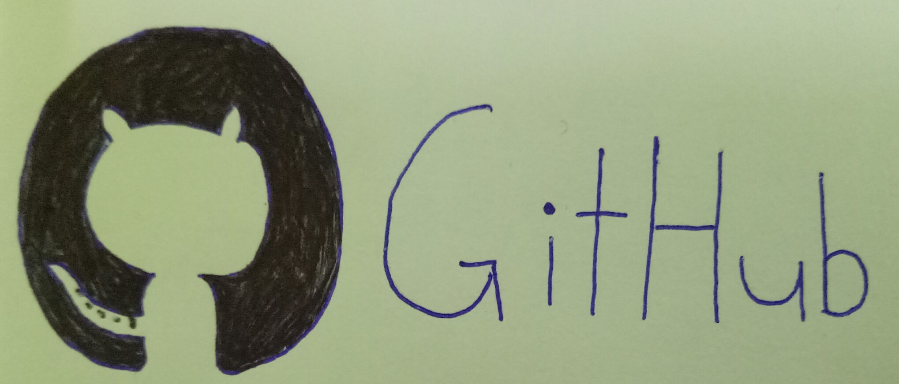Bootstrap is a css framework, it is a free and open source design website and application. Inside css framework have a set of icon, button, grid system, animation effect and more function. CSS framework is a type of pre-prepare design software, it can easy and faster to complete design website, make website beautiful at the same time.
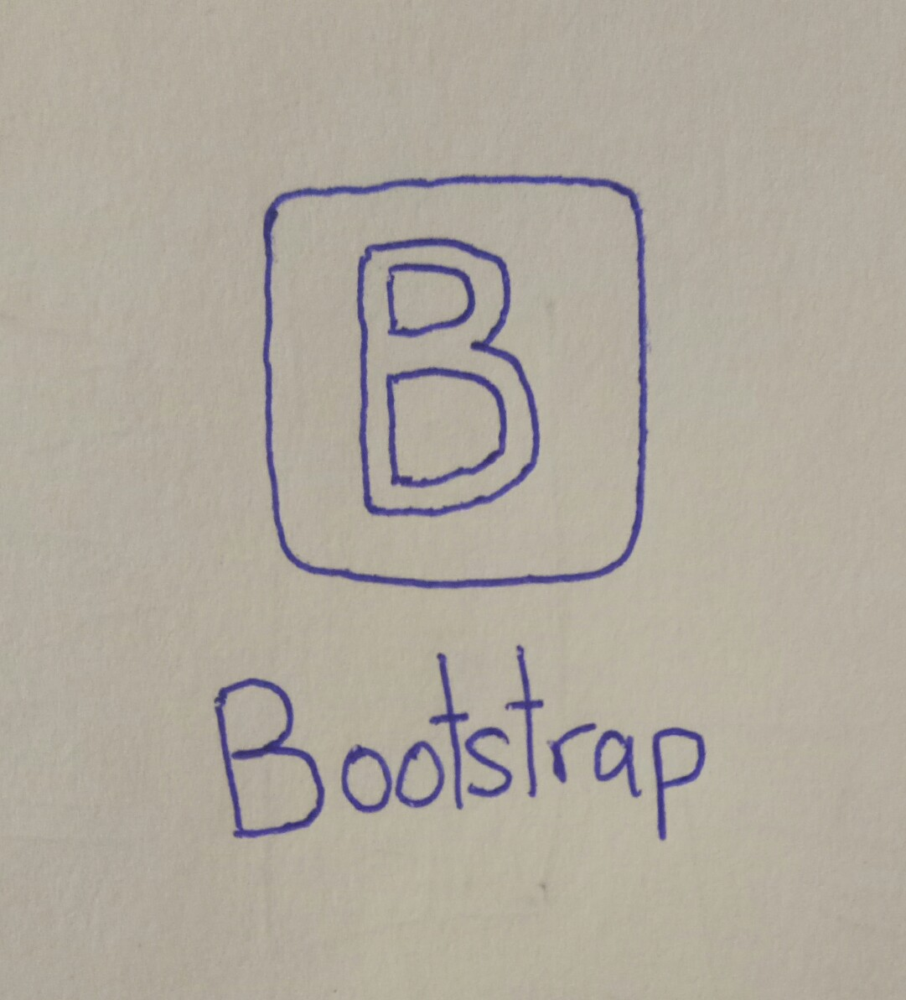Automated testing is turn the manual test into auto test. Automated testing can save time, man power and hardware resource， improve testing efficiency and avoid the human error at the same time. Selenium is a automated testing tools, it can test whether the code is compatible with the browser, and can try codes function.
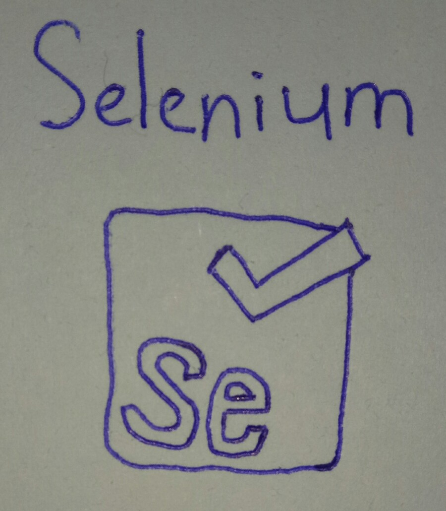Everyone browse the website have user-agent, user-agent have details of device about user. User-agent will submit details of device, when user visit the website, different device will have different experience, example computer and smartphone are different screen resolution, user-agent will according to screen resolution display different size web page. Except browser have user-agent, Play Station Portable, Wii and others same have user-agent.
The factors that affect the file size of an image have number of colors, file compression, physical pixel dimensions and file type.
First, number of colors. Type of color have two, index color and direct color. Index color have 256 type, that type normal use on GIF format image, so image file size will small. One of them of direct color is RGB, because color of RGB is very careful, have 16777216 type of colors, so when image more clear use more color will make image size large.
Second, file compression. File compression have two type, lossy compression and lossless compression. Lossy compression at compression process will increase image size and harm image pixel. Lossless compression will remove unnecessary of data but will keep image pixel.
Third, physical pixel dimention. Physical pixel dimention means inside screen of device display point, screen of device like many bulbs in screen. Image want display on screen of device normal, need consider ratio of physical pixel dimention and css pixel.
Last, file type. Different file type, image have different size. Example GIF format, GIF format use index color, index color just less color, naturally file size will small, JPG and PNG format exactly the opposite.
No matter what one factors, will be affect the file size of an image.
PNG format uses lossless compression, has 256 levels color and support Alpha channel, but is gradually transparent, although GIF format has 256 types color, has transparency however GIF format is transparent only. Through both can transparent, but zoom in can obvious see different.
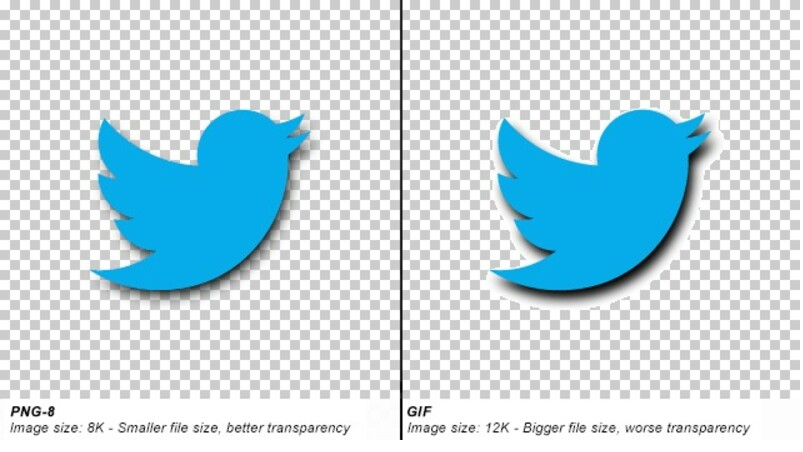Optimize image one of the method is compression. Compression have two type, lossy compression and lossless compression, lossy compression is remove some pixel data, but lossless compression is put pixel data do compression. This methods optimise image, not only optimise image, optimise websites at the same time. When image size is small, can speed up load web page time and make download times more in short time.
Web server is a database, it has data. Browser via internet send request to web server, in browser have user-agent, it will provide user detail of browse website, web server after receive will respond data of website to browser.
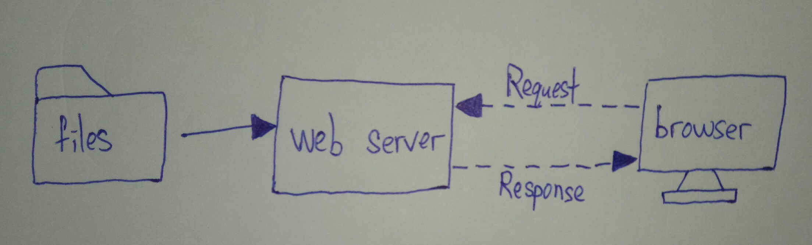One of the tool is Git. Software developer can change the code in computer, after push new codes to git server, and pull, after put new codes into window explorer to overwrite. Window explorer is make address become folder to provide user to view, edit and others function.
SEO is a type of search engine optimize tools. SEO make search engine can read content of website to understand and push up the ranking of websites, and make website can up to Top 1 and let more user easy to search for website, and increase pageviews.